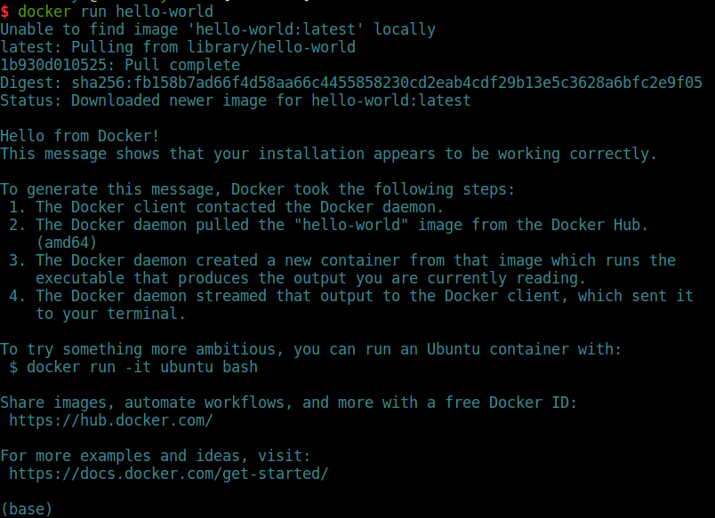
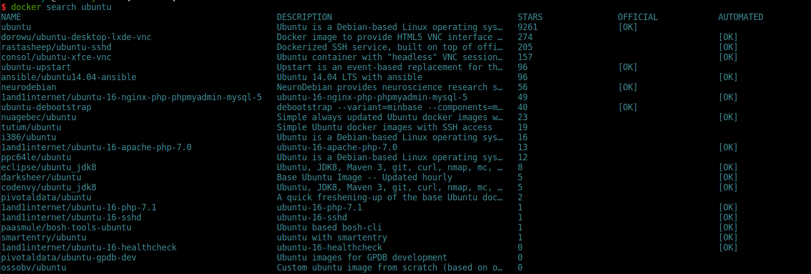
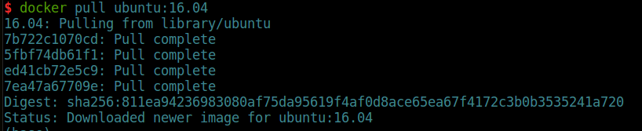
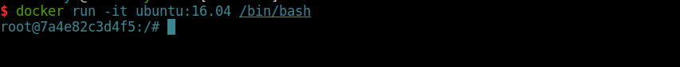
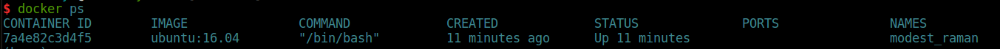
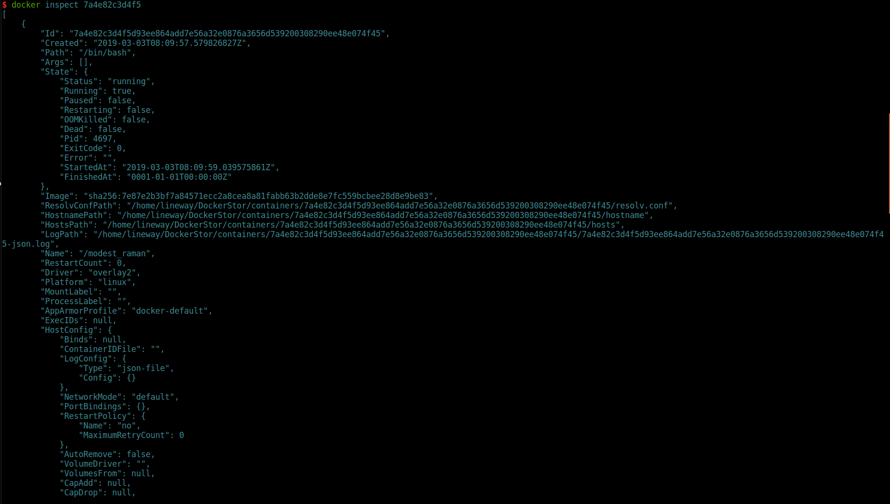
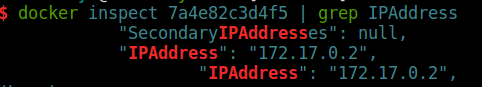
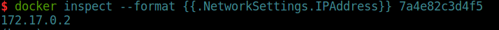

安装Docker
Docker的安装根据具体操作系统的不同有一点区别，这里使用Ubuntu16.04进行安装示例。
首先，安装最新版的Docker CE需要先卸载掉之前的版本，由于历史原因，旧版本的Docker可能命名为docker、docker.io或者docker-engine：
1 | sudo apt-get remove docker docker-engine docker.io containered runc |
接着，开始进行安装操作：
1 | sudo apt-get update |
安装完成后，docker会在后台自动启动，这时候查看docker信息：
1 | sudo docker info |
默认执行docker相关命令需要使用sudo，如果需要给普通用户配置docker权限，可使用如下命令：
1 | sudo usermod -aG docker <username> |
执行完成后，退出操作系统重新登录即可。
卸载Docker
在Ubuntu下，卸载Docker只需要执行：
1 | sudo apt-get purge docker-ce |
然后删除主机上的镜像、容器、卷等信息，默认情况下，直接删除/var/lib/docker即可，如果主机上的docker镜像等存储位置发生过变化，则需要删除对应目录。
运行Docker容器
安装完成后，尝试如下命令测试Docker是否安装正确：
1 | docker run hello-world |
结果如下所示：
则证明docker安装正确，hello-world是一个很小的镜像，主要作用就是测试Docker是否安装正确。
我们在上面使用了docker run的命令，这个命令负责启动容器，如果本地不存在需要启动的镜像，则会去镜像仓库下载镜像，然后再启动。如输出的第一行Unable to find image 'hello-world:latest'locally。
其中，镜像的名称包含该两部分，分别是镜像名称和标签，上述的hello-world就是镜像名称，latest就是镜像的标签（tag）。如果下载镜像时，不指定标签，则默认使用latest。
运行一个可用的容器
上面介绍了简单的docker run命令，但是，在实际的使用中，我们不可能只需要容器输出一段文字就可以了，这对于我们来说毫无意义。下面，我们就运行一个常规的容器，并简单介绍一些容器的使用命令。
首先，我们在镜像仓库中查找一下想要运行的容器镜像：
在输出中可以看到，镜像仓库中包含很多ubuntu镜像，其中OFFICIAL标记为OK的镜像是指官方镜像，一般情况下我们优先选择官方镜像。接下来，我们从仓库中下载镜像：
我们下载了ubuntu的镜像，选择tag为16.04，输出上述信息，表示镜像已经完全下载到本地主机，可以开始使用了。
使用docker run -it <image:tag> /bin/bash启动一个容器，启动后，自动进入到容器内部。其中：
-it命令是-i和-t命令合在一起的，-i是指--interactive。表示打开STDIN，即使在没有连接的情况下；-t指的是--tty，表示为容器分配一个伪的tty交互会话；/bin/bash参数表示进入容器后需要获得一个bash shell。
从上述容器启动命令可以大概看出，容器在启动时可以增加额外的启动参数，其具体形式如下：
1 | docker run [OPTIONS] IMAGE [COMMAND] [ARG...] |
具体可加入的选项(OPTIONS)以及命令(COMMAND)和参数(ARG)可以查阅官方文档。
启动一个容器后，我们可以重新打开一个终端，查看启动容器的相关信息：
使用docker ps命令可以查看到正在运行中的容器的简略信息，其中包含容器ID、镜像信息、执行的命令、创建的时间、状态、端口映射以及容器名称。其中，容器的名称如果在创建容器时没有制定，则docker会随机分配一个名称。当然，我们还可以使用docker inspect命令来查看容器的详细信息：
由于容器的详细信息过多，这里只截取了部分信息。在使用docker inspect来获取容器的详细信息时，我们可以使用如下方式过滤输出，只获取我们需要的信息：
docker inspect<container_id or container_name> | grep <info>，如docker inspect 7a4e82c3d4f5 | grep IPAddress则输出如下：
docker inspect --format的方式进行查询，该方式使用的是go语言模板：
上述两种方式，都可以查看容器相关信息，其中第二种方式使用的是go语言模板的方式实现的，具体可查阅go语言相关文档。
使用docker logs命令，以容器名或ID为参数，就可以获取到该容器的日志信息，这里不做演示，可以自行操作。
在容器中，输入exit就可以退出容器，在我们演示的这个容器中，退出容器的同时，容器也会停止。这时候使用docker ps是没有容器信息返回的，可以使用docker ps -a进行查看，正常退出的容器可以使用docker start <container_id or container_name>进行重启。
如果确认不需要的容器，可以使用docker stop命令停止该容器，然后再使用docker rm命令将这个容器删除，需要注意的是docker rm是删除容器的命令，docker rmi是删除镜像的命令。
以上就是安装docker和运行容器的简单操作，后续我们则从实际出发，介绍容器的相关内容。